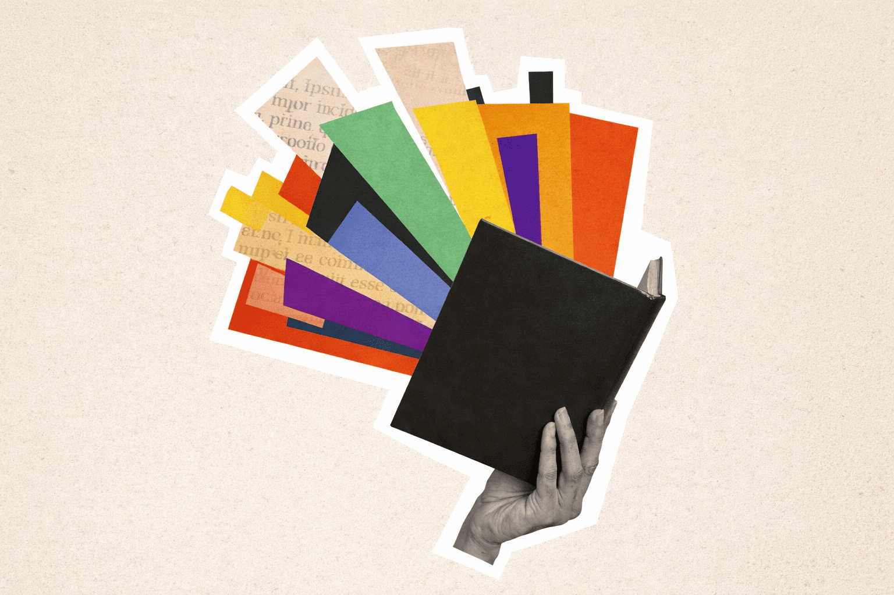
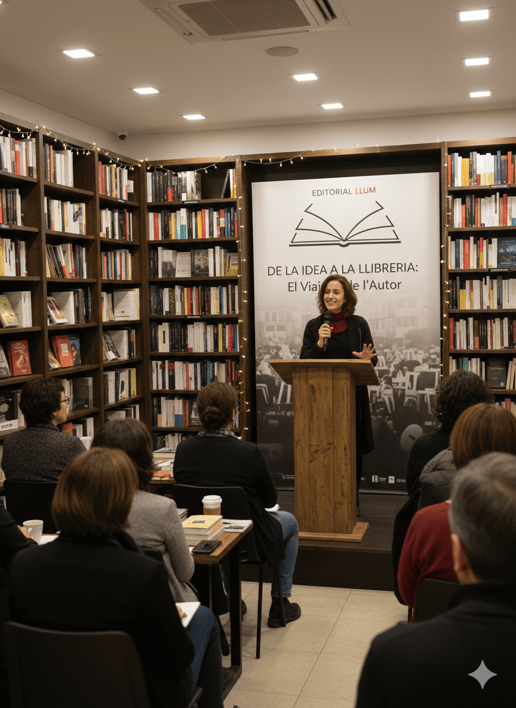
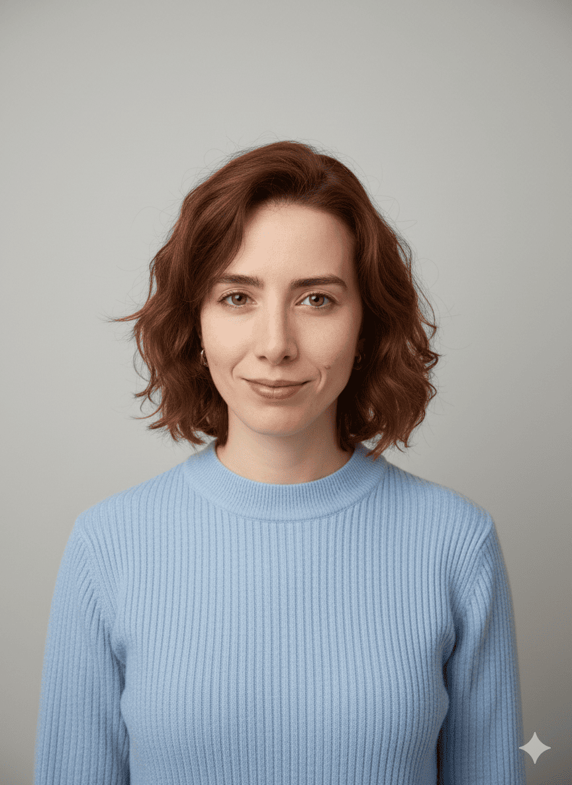
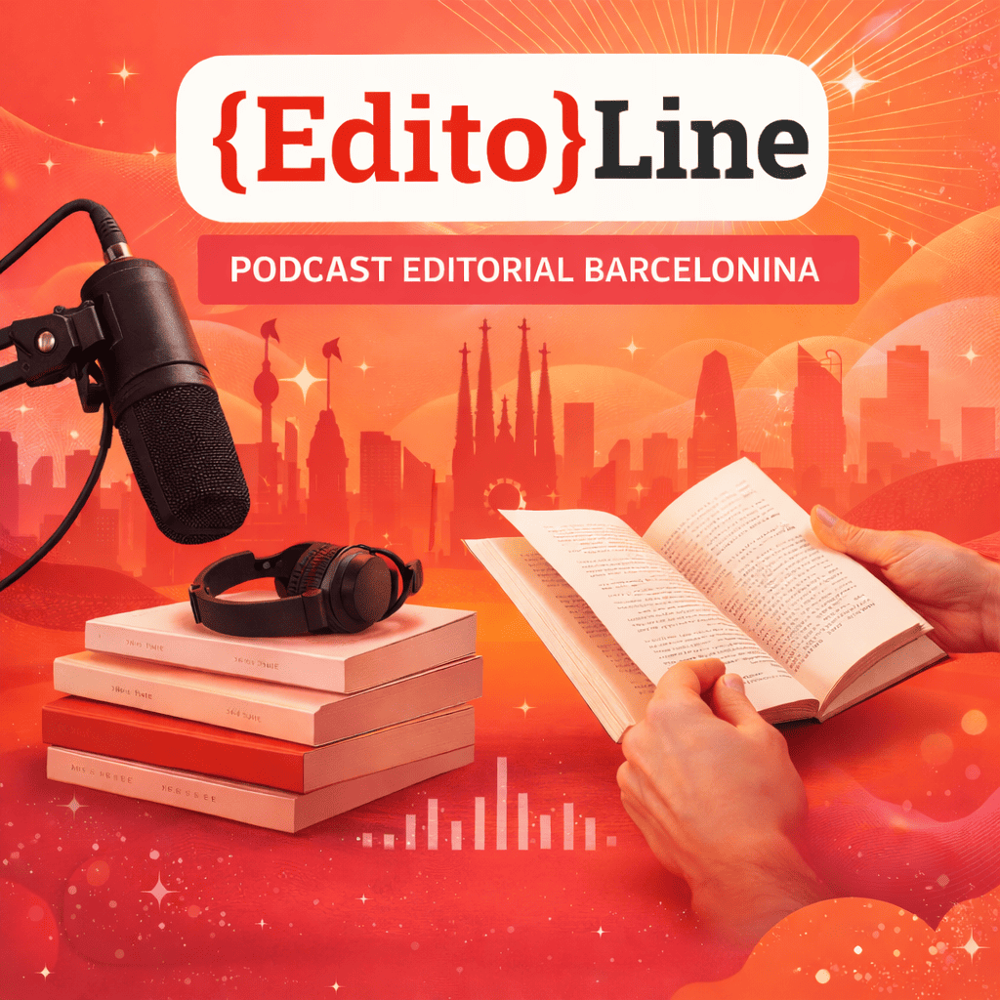

Laia Serra
Presentació de «Veus Submergides»
Presentació del nou poemari de Laia Serra, amb lectura de textos i col·loqui amb l'autora. Acte obert al públic a la sala polivalent d'{Edito}Line.
Editorial independent barcelonina dedicada a impulsar escriptors joves i emergents, amb una aposta clara per la literatura contemporània i noves formes de creació literària.
Explora els nostres llibres Envia'ns el teu manuscrit
No esperis a Sant Jordi per regalar un llibre! Aquest Sant Valentí, enamora i enamora't amb un 5% de descompte i enviament gratuït.
Veure llibres


DIM
12
FEB

Laia Serra
Presentació del nou poemari de Laia Serra, amb lectura de textos i col·loqui amb l'autora. Acte obert al públic a la sala polivalent d'{Edito}Line.
DJ
19
FEB
Marc Vila
Sessió moderada pel crític literari Marc Vila al voltant de dues obres recents del catàleg d'{Edito}Line. Activitat amb inscripció prèvia.
DS
22
FEB
Anna Pujol
Taller pràctic de quatre hores centrat en tècniques narratives i desenvolupament de personatges, impartit per l'escriptora Anna Pujol en un espai llogat al centre de Barcelona.
DC
26
FEB


Íngrid Palomino
Debat amb autors i editors sobre els reptes de l'edició independent actual. Activitat gratuïta amb aforament limitat a un espai cultural col·laborador.
Descobreix l'últim episodi del nostre podcast:

Episodi 12: Ressenya del llibre top vendes Trenca els teus motlles, de Georgina Cercós.